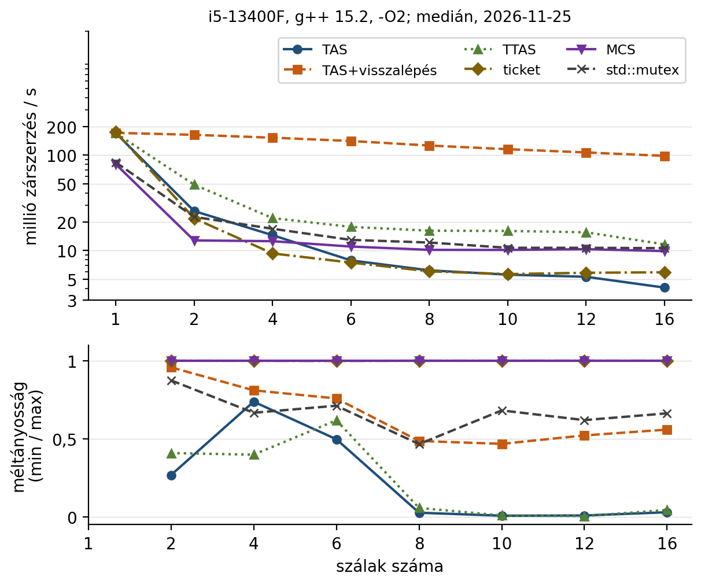

A counter kernel zárral védett változata a mérőgépen egy
szálon 171 millió zárszerzést végez másodpercenként a legegyszerűbb,
test-and-set spinlockkal. Nyolc szálon ugyanez a zár 6,2
milliót – a nyolc mag együtt huszonhetedannyit végez, mint egy
egyedül. Ha a zárba néhány sornyi várakozást teszünk a sikertelen
próbálkozás után, nyolc szálon újra 126 millió lesz. A kritikus szakasz
végig ugyanaz volt.
A különbség tisztán koherenciaforgalom: az dönti el, hogyan várakozik a zárra egy mag. Ebben az alfejezetben négy zárat vizsgálunk a hardver felől, majd megnézzük, hogyan próbálja a tranzakciós memória a zár nagy részét megspórolni.
A zár egy jelző a memóriában. Aki bent van a kritikus szakaszban, feloldáskor átírja. A többiek várnak – háromféleképpen:
Az alábbi idővonalakon négy mag egyszerre érkezik a zárhoz, a kritikus szakasz 4 lépés. A „B” cella buszkérést jelent. Figyeld meg, hogy a TAS idővonala tele van B-vel, a TTAS a feloldások után mutat rövid B-vihart, a ticket és az MCS pedig hosszú, csendes várakozást.
Definíció. A test-and-set (TAS) atomi művelet 1-et ír a címre, és visszaadja a régi értéket. A TAS-zárat az kapja meg, aki 0-t kapott vissza.
A bench_counter.cpp két változata (a Backed
sablonparaméter kapcsolja a visszalépést):
template <bool Backed>
struct TasLock { // test-and-set: minden próbálkozás írás (kizárólagos sorbirtoklást kér)
std::atomic<bool> flag{false};
struct Node {};
void lock(Node&) {
Backoff b;
while (flag.exchange(true, std::memory_order_acquire)) {
if constexpr (Backed) b();
}
}
void unlock(Node&) { flag.store(false, std::memory_order_release); }
};A zárolás acquire, a feloldás
release rendezésű: a kritikus szakasz műveletei sem
elé, sem mögé nem csúszhatnak (Gyenge modellek: ARM
és RISC-V, A hardver és a C++
memóriamodell). x86-on az exchange xchg
utasítás (teljes rendezést is ad), a release tárolás sima
mov – a TSO miatt ennyi elég (TSO: az
x86 memóriamodellje).
A baj: az exchange írás, akkor is, ha
1-et ír 1 fölé. Minden várakozó M állapotot kér (Atomi műveletek a hardverben), a sor körbe jár a
várakozók között – ez a buszvihar. Még a zár
birtokosának is meg kell küzdenie érte a feloldáshoz.
void lock(Node&) {
Backoff b;
for (;;) {
if (!flag.exchange(true, std::memory_order_acquire)) return;
bench::spin_until([this] { return !flag.load(std::memory_order_relaxed); });
if constexpr (Backed) b();
}
}Sikertelen próbálkozás után a mag csak olvas. A sor minden várakozónál S állapotban ül, az olvasás helyi találat, buszforgalom nincs. Feloldáskor viszont a birtokos írása érvényteleníti az összes másolatot, mindenki újraolvas, mindenki látja a szabad zárat, és egyszerre próbálkozik: egy mag nagyságú kitörés minden átadáskor.
pauseA visszalépés (backoff) a sikertelen próbálkozás után várakoztat, kitörésenként duplázott ideig:
struct Backoff { // exponenciális visszalépés 4 … 1024 pause között
unsigned limit = 4;
void operator()() {
for (unsigned i = 0; i < limit; ++i) bench::cpu_relax();
if (limit < 1024) limit *= 2;
}
};A cpu_relax x86-on a pause, ARM-on a
yield utasítás. Ez nem alszik: jelzi a processzornak, hogy
pörgő várakozás folyik. Így az SMT testvérszál több erőforrást kap,
csökken a fogyasztás, és a ciklusból kilépéskor ritkább a spekuláció
drága visszaállítása [S-INTEL-SDM]. A pause ideje
processzorgenerációnként nagyon eltérő lehet (ellenőrizendő a célgépen).
A visszalépés ára: a zár szabad maradhat, miközben mindenki alszik, és a
hosszan várakozó hátrányba kerül.
A ticket zár (sorszámos zár) sorszámot oszt: a
next atomi növelése adja a jegyet, a várakozó addig olvassa
a serving változót, amíg a saját száma nem jön; a feloldás
növeli a serving-et. Érkezési sorrendben szolgál ki
(méltányos), és zárszerzésenként egyetlen RMW kell. De
mindenki ugyanazt a serving sort olvassa, ezért minden
feloldás után az összes várakozó újraolvas: átadásonként
kérés.
Az MCS-zár (Mellor-Crummey és Scott) [S-MCS] láncolt sort épít: minden szálnak saját csomópontja van, saját cache-sorban.
void lock(Node& me) {
me.next.store(nullptr, std::memory_order_relaxed);
me.locked.store(true, std::memory_order_relaxed);
Node* prev = tail.exchange(&me, std::memory_order_acq_rel);
if (!prev) return;
prev->next.store(&me, std::memory_order_release);
bench::spin_until([&] { return !me.locked.load(std::memory_order_acquire); });
}A várakozó csak a saját locked mezőjén pörög
(helyi pörgés); a feloldó egyedül az utódja jelzőjét
írja. Átadásonként állandó számú,
kérés, bárhányan várnak. Cserébe a feloldás bonyolultabb (ha nincs
ismert utód, CAS kell), és verseny nélkül is két atomi művelet a zárolás
és a feloldás.
| zár | min pörög | RMW szerzésenként | kérés átadásonként | méltányos |
|---|---|---|---|---|
| TAS | közös jelző, írva | sok | minden lépésben | nem |
| TTAS | közös jelző, olvasva | néhány | kitörés | nem |
| ticket | közös számláló, olvasva | 1 | újraolvasás | igen |
| MCS | saját jelző | 1–2 | igen |
Továbbvitt eredmény. A zárak koherenciaköltsége: a közös jelzőn pörgő zárak átadásonként a várakozók számával arányos forgalmat okoznak (TAS-nál folyamatosan), a helyi jelzőn pörgő sorzár (MCS) állandó mennyiséget. Egy átadás legalább egy sorátvitel a magok között; ennek árát az Összeköttetések és NUMA topológiái határozzák meg, a mérésvezérelt javítás módját pedig az Esettanulmány: mérésvezérelt optimalizálás mutatja.

Jegyzőkönyv: bench_counter --mode locks, i5-13400F, g++
15.2.0, -O2, 50 ms-os futások, 7 ismétlés, rögzített
szálak, 2026-11-25; a kritikus szakaszban két közös változó növelése. A
méltányosság a legkevesebbet és a legtöbbet szerző szál
arányának mediánja.
Mit olvasunk le?
std::mutex sok szálon az MCS
közelében van: rövid pörgés után a rendszermag elaltatja a várakozót (a
Linux futex mechanizmusa; Operációs rendszerek könyv).Ha több a szál, mint a mag, a spinlockok viselkedése drámaian romolhat: egy kiütemezett birtokos (ticketnél egy kiütemezett sorban álló is) mindenkit feltart. Ezt itt nem mértük.
Sok zárral védett kritikus szakasz valójában nem ütközik: két szál ugyanazt a hasítótáblát módosítja, de más vödörben. A hardveres tranzakciós memória (HTM) [S-HERLIHY-MOSS] spekulatívan, zár nélkül futtatja a szakaszt, és csak ütközéskor von vissza.
Működése a koherenciára épül:
A tipikus megszakítási okok: ütközés (sorszinten, tehát hamis megosztás miatt is, lásd A koherencia ára: ping-pong és false sharing), kapacitás (az írási halmaz nem fér el az L1 halmazaiban), megszakítás, rendszerhívás, egyes utasítások. A HTM „legjobb szándékú”: nem ígéri, hogy egy tranzakció valaha lefut, ezért tartalék útra (rendes zárra) mindig szükség van.
Az Intel TSX (RTM: xbegin, xend,
xabort) megvalósítást több processzoron mikrokód-frissítés
tiltotta le hibák és mellékcsatorna-kockázatok miatt, és az újabb
asztali processzorok nem kínálják (ellenőrizendő: termék- és
mikrokódfüggő) [S-INTEL-SDM]. A tanulság: a spekulatív állapot a
cache-ben megfigyelhető nyomot hagy, és a bonyolult
hardveres garanciát nehéz helyesen megcsinálni. Ezért a könyvben a
HTM-et csak modellel vizsgáljuk.
A ticket zár forgalma négy magon. Mindegyik egyszer
szerzi meg a zárat; a next és a serving külön
sorban van.
| forrás | mi történik | buszkérés |
|---|---|---|
jegy: fetch_add(next) |
mind a négy mag M-ben kéri a next sort
(BusRdX) |
4 |
első olvasás: serving |
mind a négy beolvassa (BusRd) |
4 |
| újraolvasás | a 0. feloldás után 3, az 1. után 2, a 2. után 1 várakozó olvas újra | 6 |
feloldás: serving írása |
négy BusUpgr |
4 |
| összesen | 18 |
Zárszerzésenként kérés. Általánosan magnál , azaz szerzésenként
A képlet azt mondja: a ticket zár átadási költsége a várakozók számával lineárisan nő, de lassabban, mint a TTAS-é. A szimulátor -re 18,5-öt ad, pontosan a képlet szerint. Az MCS ugyanitt 5,9, mert minden átadás csak az utód sorát érinti.
A lock_sim MESI buszon, lépésenként egy műveletet végző
magokkal játssza le a zárakat, és megadja az idővonalat és a
buszkéréseket.
import sys; sys.path.insert(0, "code")
from archkit import coherence as C, perf
r = C.lock_sim("ticket", ncores=4, cs=4)
for core, line in enumerate(r["timeline"]):
print(f"P{core} {line}")
print("kérések:", r["counts"], " összesen:", r["transactions"])
print("N " + "".join(f"{k:>13}" for k in C.LOCKS))
for n in (2, 4, 8, 16, 32):
per = [C.lock_sim(k, n, cs=8)["per_acquire"] for k in C.LOCKS]
print(f"{n:<6}" + "".join(f"{v:>13.2f}" for v in per))P0 BACCCCR---------------
P1 BB....ACCCCR----------
P2 BB....B....ACCCCR-----
P3 BB....B....B....ACCCCR
kérések: {'BusRd': 10, 'BusRdX': 4, 'BusUpgr': 4, 'Flush': 6} összesen: 18
N tas tas_backoff ttas ticket mcs
2 2.00 2.00 3.50 3.50 4.00
4 13.25 4.75 6.50 4.50 5.00
8 32.38 7.12 12.50 6.50 5.50
16 68.94 11.31 24.50 10.50 5.75
32 141.22 19.41 48.50 18.50 5.88A betűk jelentése: B buszművelet, . helyi
találat, A belépés, C kritikus szakasz,
R feloldás, - kész. A mért adatok:
_, rows = perf.read_bench_csv("figures/data/ca064-zarak.csv")
M = {(x["lock"], x["threads"]): x for x in rows}
print("zár 1 szál 8 szál 16 szál méltányosság (8) [millió/s]")
for k in ("tas", "tas_backoff", "ttas", "ticket", "mcs", "mutex"):
print(f"{k:<12}" + "".join(f"{float(M[k, n]['median_mops']):>9.1f}" for n in (1, 8, 16))
+ f"{float(M[k, 8]['fairness_min_max']):>14.2f}")zár 1 szál 8 szál 16 szál méltányosság (8) [millió/s]
tas 170.5 6.2 4.1 0.03
tas_backoff 171.3 126.1 98.2 0.49
ttas 170.0 16.1 11.6 0.06
ticket 175.1 6.0 5.9 1.00
mcs 80.5 10.2 9.9 1.00
mutex 84.1 12.1 10.6 0.47És a HTM-modell: az írási halmaz a mérőgép 48 KiB-os, 12 utas L1-ének (64 halmaz) felel meg.
l1 = dict(sets=64, ways=12)
a = C.htm_outcome(reads=[], writes=[64 * i for i in range(768)], **l1)
b = C.htm_outcome(reads=[], writes=[4096 * i for i in range(13)], **l1)
c = C.htm_outcome(reads=[0x1000], writes=[0x2000], others=[(0x1008, True)], **l1)
for name, res in (("768 egymás utáni sor", a), ("13 sor, 4 KiB lépéssel", b),
("más mag ír az olvasott sorba", c)):
print(f"{name:<30} {'commit' if res['commit'] else 'abort: ' + res['cause']}")768 egymás utáni sor commit
13 sor, 4 KiB lépéssel abort: capacity
más mag ír az olvasott sorba abort: conflictA második eset a lényeg: 13 sor (832 bájt) írása elég a megszakításhoz, ha mind ugyanabba a halmazba esik (Cache-szervezés: leképezés és címbontás). A harmadik esetben a 0x1008 más változó, mint a 0x1000, mégis egy sorban van – hamis ütközés.
Az interaktív ábrán a Zár, a Magok, a Kritikus szakasz (lépés) és a Zárszerzés magonként vezérlőket állíthatod.
lock_sim("tas_backoff", 8, cs=8) modellt 1, 4, 16 és 64
legnagyobb visszalépéssel. Hogyan változik a forgalom és a teljes
idő?A zár várakozója a koherenciát terheli. A TAS várakozás közben is ír, ezért buszvihart okoz; a TTAS olvasva vár, de feloldáskor kitörés jön; a visszalépés csökkenti a forgalmat, a méltányosság árán. A ticket zár méltányos, szerzésenként kérés a modellben; az MCS sorzár helyi jelzőn pörög, átadásonként kéréssel. Zárolás acquire, feloldás release. A mérőgépen a méltányos zárak minden átadása sorátvitelbe kerül. A hardveres tranzakciós memória spekulatívan fut, a koherenciával észleli az ütközést, és kapacitás vagy ütközés miatt megszakadhat, ezért tartalék zár kell. A zárak koherenciaköltsége a topológiától is függ.
exchange-dzsel.1. kérés szerzésenként, összesen .
2. A szakasz alatt egyet: az első
exchange BusRdX-szel M-be hozza a jelzőt,
utána a további próbálkozások helyi találatok, mert
senki más nem nyúl a sorhoz. A buszvihar legalább két várakozót kíván. A
TTAS várakozója a modellben a verseny elején egy olvasást és egy
sikertelen exchange-et küld, a feloldás után pedig
újraolvas és exchange-dzsel lép be – az idővonal
B és A betűi ezt mutatják.
for kind in ("tas", "ttas"):
r = C.lock_sim(kind, 2, cs=10)
print(f"{kind:<5} kérés {r['transactions']} P1: {r['timeline'][1]}")tas kérés 4 P1: B..........ACCCCCCCCCCR
ttas kérés 7 P1: BB..........BACCCCCCCCCCR3. Ticket: ns; MCS: ns zárszerzésenként. Mindkettő több egyetlen P–P sorátvitelnél (≈ 38 ns): egy átadás több sorátvitelből áll (a jelző, a védett adatok, ticketnél a sok újraolvasás), és 16 szálnál E-magok és SMT-párok is részt vesznek, nagyobb késleltetéssel. A pontos felbontáshoz eseményszámlálós mérés kellene.
4.
for limit in (1, 4, 16, 64):
r = C.lock_sim("tas_backoff", 8, cs=8, max_backoff=limit)
print(f"max={limit:>2}: kérés {r['transactions']:>3} lépés {r['steps']:>3}")max= 1: kérés 151 lépés 80
max= 4: kérés 77 lépés 80
max=16: kérés 57 lépés 114
max=64: kérés 57 lépés 274A forgalom a felső határ növelésével csökken, egy határ után viszont már nem javul, miközben a teljes idő nőni kezd: a zár szabad, de a várakozó még alszik. A jó érték a kritikus szakasz hosszától függ.
5. Nem: 2000 sor több, mint az L1 sora. Daraboláskor egy tranzakció legfeljebb néhány száz rekordot írjon (a halmazonkénti 12 útba beleértve a verem és egyéb adatok sorait is), a darabok között pedig a program invariánsainak érvényesnek kell lenniük; különben egyetlen rendes zár a helyes megoldás.